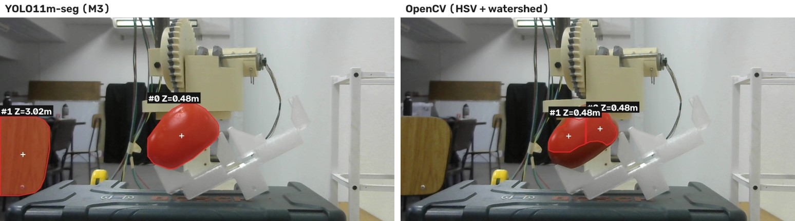
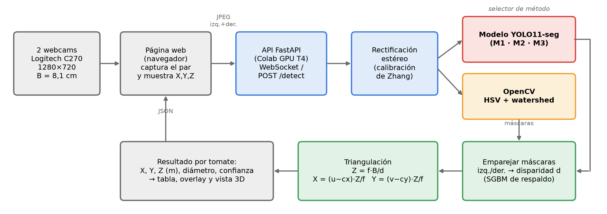
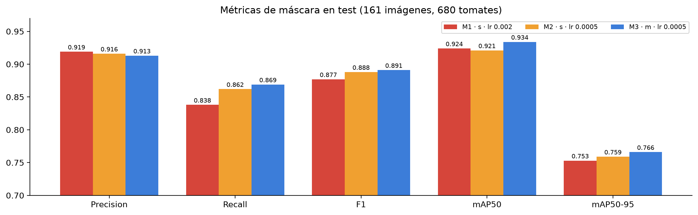

LG
Lucas Garcia
Estudiante de Ingeniería Mecatrónica · FIUNA
Estudiantes de Ingeniería Mecatrónica (9.º semestre) de la Facultad de Ingeniería de la Universidad Nacional de Asunción. Trabajamos en la intersección entre robótica, visión por computadora e inteligencia artificial: sistemas que perciben su entorno y le dan a una máquina la información que necesita para actuar.
Estudiante de Ingeniería Mecatrónica · FIUNA
Estudiante de Ingeniería Mecatrónica · FIUNA
Un sistema que encuentra tomates maduros y semimaduros en una imagen y calcula su posición en el espacio (X, Y, Z, en metros) con dos webcams. Esa información es la que necesita un brazo robótico para cosechar. Todo funciona desde una página web: calibración de las cámaras, detección por imagen y detección en vivo.

Laboro Tomato: 804 fotos reales de invernadero con máscaras por fruto. Los tomates maduros y semimaduros se unieron en una clase (3327 instancias); los verdes quedan como fondo (6450). Partición 547 / 96 / 161 (train / val / test) sin fuga de datos.
YOLO11-seg preentrenado en COCO y ajustado (fine-tuning) con Laboro Tomato, optimizado con AdamW. Se compara con un detector clásico de OpenCV (color HSV + watershed). La profundidad se calcula con visión estéreo calibrada: Z = f·B/d.
Búsqueda manual, una variable por vez: primero el learning rate, después el tamaño del modelo con el mejor learning rate (elegido en validación), y por último la definición de la clase. En total, 6 entrenamientos de 100 épocas en una GPU T4.
| Modelo | Arquitectura | Learning rate | Parámetros | mAP50-95 (máscara, test) | ms/img (T4) |
|---|---|---|---|---|---|
| M1 | yolo11s-seg | 0,002 | 10,1 M | 0,753 | 10,0 |
| M2 | yolo11s-seg | 0,0005 | 10,1 M | 0,759 | 9,5 |
| M3 | yolo11m-seg | 0,0005 | 22,4 M | 0,766 | 25,7 |
| OpenCV | HSV + watershed | — | 0 | — | 78 (CPU) |

